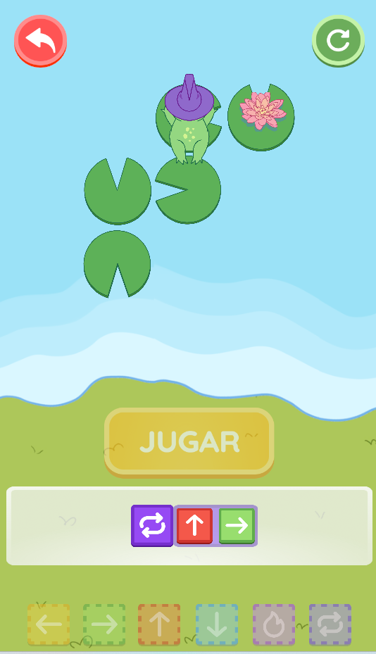
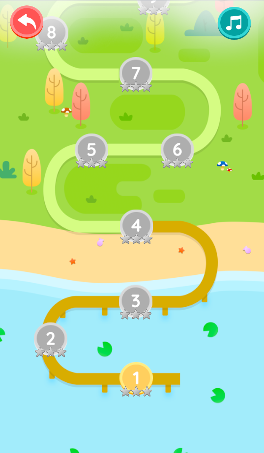
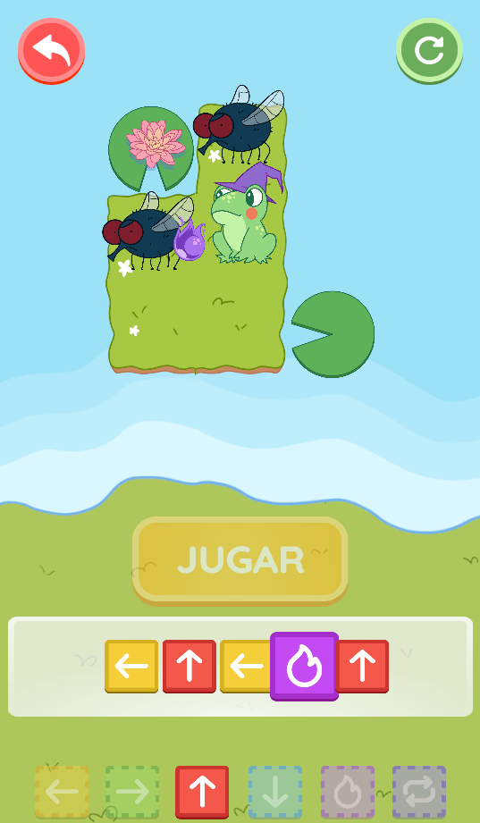
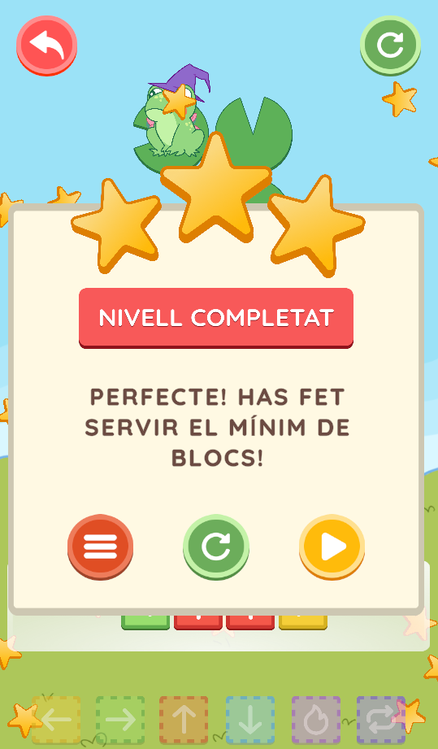
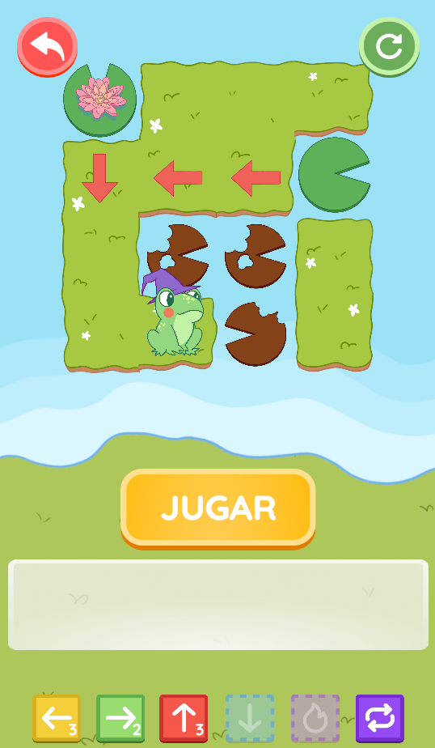

GranotaGo és un joc casual i colorit, pensat per a nens i nenes de 6 a 8 anys i desenvolupat amb Unity, en què el jugador controla una granota que ha d'avançar per escenaris dinàmics evitant obstacles i recollint punts. Va ser creat per als Premis Ludi de 3Cat en equip amb altres estudiants del CITM.
Característiques principals
- Mecàniques drag & drop
- Escenaris colorits
- Sistema de puntuació
Durant el desenvolupament, vaig treballar en la programació del sistema de panells i blocs. També em vaig encarregar de testejar, corregir i polir els nivells.
El projecte va ser presentat als Premis Ludi de 3Cat i va destacar per la seva estètica i jugabilitat fluida.